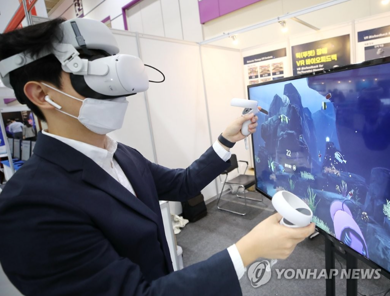
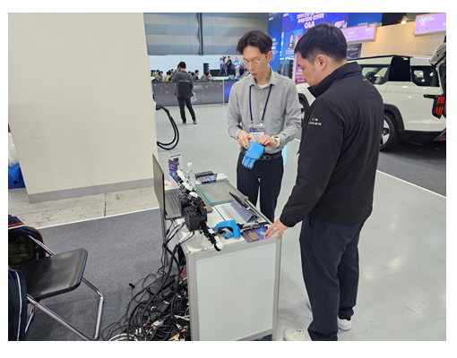
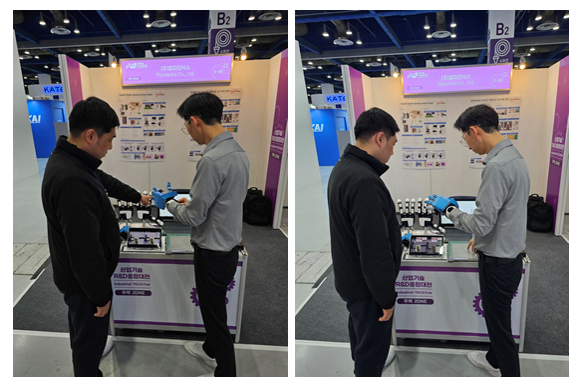
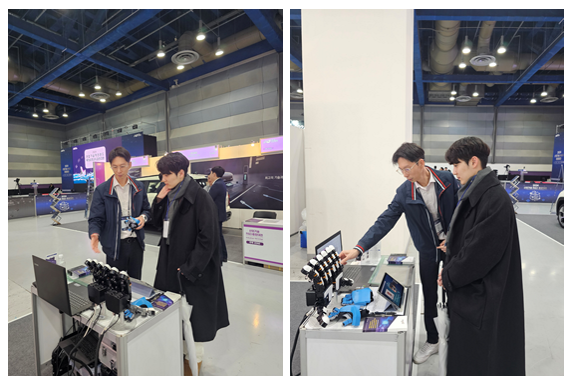

피지오닉스 바이오피드백 행동치료게임 시연

'행동치료게임으로 틱 완화를'
30일 오전 서울 강남구 코엑스에서 열린 '국제병원의료산업박람회' 한 부스에서 관계자가 틱장애 완화를 위한 바이오피드백 행동 치료게임을 시연하고 있다. 2021.9.30.
[2024 R&D 산업대전] 하이브리드 촉각센싱 로봇핸드 시연
안녕하세요 피지오닉스 입니다!
2024년 11월의 마지막주,
서울 COEX에서 정부 연구개발 성과 전시회인
2024 R&D 산업대전이 개최되었는데요,
피지오닉스의 주요 연구개발 성과인
로봇핸드가 그 자리에 빠질 수 없겠죠?
열심히 준비해서 참석했던 현장을 여러분께 소개해드립니다!



피지오닉스의 하이브리드 촉각센싱 로봇핸드는
Parallel Gripper 파지 능력 향상을 위한 요소기술,
하이브리드형 고성능 전자피부 구현을 위한 요소기술,
사람촉감을 갖는 로봇 핸드 구현을 위한 요소기술을 개발하여
구현한 로봇시스템 입니다.
로봇 손바닥 전체면에 촉각의 기계적 특성을 모사함으로써
로봇분야의 광범위한 활용 솔루션을 제공하고 있어요!
실제 적용하여 활용해 볼 수 있는 분야가 넓다보니
산업체나 관련 연구를 진행하는 기관에서
많은 관심과 질문을 주셔서
저희 연구원들 모두 뿌듯한 마음으로 전시회를 마칠 수 있었습니다.
많은 관심을 주신 모든 분들께 감사드리며,
앞으로도 응원 부탁드립니다!
감사합니다~~♥
자세한 사항은 아래 전화번호로 문의 가능하며 홈페이지 및 블로그를 참고해주세요~
Tel) 042-867-7880